Нейросетевые инструменты в работе моушн-дизайнера
Генератор может дать красивый кадр, но для ролика нужно решить, что произойдёт до него и после. В этой лекции пройдём путь от идеи и раскадровки до опорных изображений, движения, апскейла и монтажа. Начнём с готовой работы, затем разберём, какие решения помогают собрать отдельные генерации в историю.
Знание анимации здесь остаётся основой. В обычной анимации мы задаём позы, ключи, траектории и длительности. В генеративном процессе часть этих решений модель достраивает по условиям, поэтому точный результат заранее не гарантирован. Композиция помогает поставить задачу, а тайминг, вес, предвосхищение и монтаж помогают понять, получился ли убедительный ролик. Эти знания раскрывают возможности инструмента и позволяют исправлять материал после генерации.
В The Frost команда Waymark соединяет сгенерированные сцены в фантастическую историю. Посмотрите небольшой эпизод в начале и вернитесь к фильму после раздела о монтаже. Проследите, сколько информации дают звук, паузы и смена крупности, а какие детали действительно движутся внутри кадра.


Это два результата разных запросов из статьи Сбера. В первом изображении внимание уходит вдоль воды в глубину, во втором дом становится главным объектом, а свет задаёт время суток. Чтобы анимировать такую сцену, сначала решите, что должно двигаться. Для спокойного пейзажа можно оставить камеру неподвижной и оживить только воду и листву. Для истории про дом важнее сохранить его конструкцию, чем добавить сразу несколько эффектов.
Предположим, мы делаем двенадцатисекундный ролик для настольной лампы. В начале виден холодный пустой стол, затем включается свет, и пространство становится обжитым. Финал удерживает продукт и короткую фразу. Смысл сцены можно сформулировать как переход от отчуждения к уюту. Это решение определяет палитру, пластику света, крупности, длительность паузы и характер звука. Ниже разложим эту мысль на пять планов: присутствие человека появится через действие с блокнотом.
- Бриф и идея
- Сценарий и раскадровка
- Стиль и опорные кадры
- Аниматик
- Генерация отдельных планов
- Монтаж и композитинг
- Улучшение выбранных фрагментов
- Звук, титры и экспорт
К этой последовательности возвращаются несколько раз. Если движению не хватает места, правят исходный кадр. Если план не стыкуется с соседним, меняют ракурс или длительность. При этом полезно различать изменение замысла и исправление технического дефекта. Иначе удачный случайный результат начинает определять весь проект, а команда теряет первоначальную задачу.
Генерация бывает основной техникой производства, источником отдельных слоёв или способом быстро проверить направление. Для одного ролика достаточно сгенерировать фон и атмосферу, а продукт снять или отрендерить в 3D. В другом можно собрать последовательность из сгенерированных сцен. В третьем генератор нужен только для раскадровки, а финальное движение полностью создаётся вручную.
Нейросети полнее раскрываются со знанием анимации. Генератор предлагает изображение и движение, а дизайнер ставит сцену: выбирает главное, крупность, ракурс, подготовку действия, темп и момент склейки. Знание композиции помогает сформулировать запрос, знание анимации помогает увидеть, почему красивый результат не работает во времени.
В анимации по ключам мы задаём положение, поворот, деформацию, свет и зависимости между элементами. Можно открыть конкретный кадр и изменить нужный параметр. В покадровой анимации автор сам строит последовательность рисунков. При обычной генерации text-to-video или image-to-video модель предлагает последовательность изображений по условиям. Полученный клип обычно не содержит готового рига и отдельных редактируемых слоёв сцены.
| Задача | Ключевая анимация | Генеративный видеоплан |
|---|---|---|
| Нажать кнопку в нужный момент | Ставим позу и контакт на выбранном кадре, настраиваем переход. | Описываем действие, задаём опоры, выбираем удачный дубль. Точность момента проверяем и уточняем монтажом или отдельным слоем. |
| Изменить скорость руки | Правим тайминг, спейсинг и кривые. | Меняем условия генерации или обрабатываем клип. Простое замедление может изменить весь план. |
| Сохранить форму продукта | Работаем с заданной графикой или геометрией. | Проверяем конструкцию в каждом участке движения. Референсы и карты управления помогают, но результат всё равно требует отбора. |
| Заменить фон | Редактируем фон или его слой. | Используем маску, локальное редактирование либо композитинг. Проверяем, не изменились ли соседние области. |
Поэтому генерация часто становится частью смешанного процесса. Атмосферу и фактуру можно получить моделью, точный жест поставить вручную, а логотип и текст собрать в AE. Важно заранее решить, где нужна вариативность, а где покадровый контроль. Генерация тоже создаёт анимацию, но способ управления отличается от работы с ключами и ригом.
Подготовка, дуги, вес и паузы остаются значимыми. Если рука сразу оказывается на кнопке, пропадает ожидание действия. Если после включения нет времени рассмотреть результат, тёплый свет не успевает стать событием. Если камера меняет направление без причины, монтаж распадается. Эти вещи мы оцениваем теми же средствами, которые разбирали в двенадцати принципах, драматургии, композиции и монтаже.
Начинать удобно с карты ответственности. Какие части должны быть точными? Обычно это форма продукта, логотип, текст, обязательная информация и ключевой жест персонажа. Где допустима вариативность? Фоновые фактуры, абстрактные переходы, атмосферные детали и варианты освещения часто дают больше свободы. Чем строже требования к элементу, тем важнее заранее выбрать способ его контроля.
Чатбот как участник препродакшна
Текстовые ассистенты, например ChatGPT, Claude или Gemini, могут помогать структурировать бриф, предлагать сценарные направления, разбивать действие на планы, формулировать вопросы заказчику и описывать ограничения. Результат зависит от исходных данных. Запрос «придумай красивый ролик» оставляет почти все решения модели. Подробный контекст позволяет получить материал, который можно обсуждать и редактировать.
Бриф, варианты сценария и экспликация с лампой ниже составлены как учебный пример для этой лекции. Это не цитата реального разговора с чатботом и не кейс существующего бренда. На примере показываем, какие исходные данные полезно дать ассистенту и как затем проверять его предложения.
В запрос стоит включить продукт, аудиторию, носитель, длительность, сообщение, тон, обязательные элементы и производственные ограничения. Укажите, что уже есть у команды: фотографии продукта, модель, фирменные шрифты, записи голоса, музыка или примеры прошлых работ. Если утверждённого текста пока нет, отделите рабочие формулировки от обязательной информации.
Мы делаем ролик настольной лампы длительностью 12 секунд для горизонтального экрана 16:9. Аудитория работает и учится дома. Нужно показать, как локальный свет меняет ощущение рабочего места. У нас есть фотографии лампы и логотип. Предложи три разных сценарных направления. Для каждого опиши изменение состояния, пять планов и основной производственный риск. Избегай неподтверждённых обещаний о свойствах продукта.
Сравнивайте варианты по конкретным основаниям. Есть ли действие, которое считывается без объяснения? Понятен ли продукт до финального логотипа? Хватит ли времени на изменение состояния? Можно ли получить нужный контакт руки с предметом? Ассистент может предложить эффектный сценарий, производство которого окажется неоправданно сложным для небольшой работы.
Для лампы можно выбрать три направления. Первое строится на превращении пространства светом. Второе показывает свет как маршрут для внимания: пятно последовательно открывает предметы. Третье делает героем материал: блики и тени постепенно раскрывают форму корпуса. У каждого направления свои требования к кадрам, поэтому полезно выбрать одно до генерации большой подборки.
Попросите чатбота разложить выбранное направление на наблюдаемые действия. Формулировку «становится уютно» нужно перевести в изображение. Например, холодный общий план сменяется более близким, тёплая область света выделяет книгу, рука останавливается на странице, появляется спокойная финальная композиция. Это уже можно проверить в раскадровке.
Отдельный проход посвящают критике. Попросите найти причинные разрывы, слишком похожие планы, лишние метафоры и места, где сообщение держится только на закадровом тексте. Затем сами решите, какие замечания относятся к задаче. Убедительная формулировка ассистента ещё не подтверждает, что зритель прочитает сцену таким же образом.
Таблица кадров связывает художественное решение с производством. В неё полезно включить номер, хронометраж, крупность, действие, камеру, звук, исходные материалы и способ создания. Один план должен иметь ясную функцию. Если невозможно объяснить, зачем он нужен, вероятно, его стоит объединить с другим или заменить.
Ниже учебная экспликация к сцене «от отчуждения к уюту». В первом кадре на столе находится только выключенная лампа. Блокнот появляется позже, когда человек приносит его в освещённую рабочую зону. Так обжитое пространство возникает через действие, а не через случайное добавление предметов между генерациями. Для этого разбора выбран горизонтальный формат 16:9.
| План | Время | Что видим и зачем | Как создаём |
|---|---|---|---|
| 01 · Общий | 0–2 с | Холодный пустой стол, лампа выключена. Задаём исходное состояние. | Опорное изображение, неподвижная камера. |
| 02 · Деталь | 2–4 с | Палец нажимает кнопку, включается свет. Показываем причину изменения. | Съёмка, 3D или проверенный дубль. Точный момент можно поставить отдельным слоем. |
| 03 · Средний | 4–6 с | Рука кладёт блокнот в световое пятно. Пространство становится рабочим. | Отдельный план с одним ясным действием. |
| 04 · Средний | 6–9 с | Блокнот открыт, рука остаётся у страницы. Даём почувствовать новое состояние. | Спокойный план, сдержанное движение. |
| 05 · Финал | 9–12 с | Лампа, открытый блокнот и короткая фраза. Пауза на чтение. | Опорное изображение и отдельный титр в композитинге. |

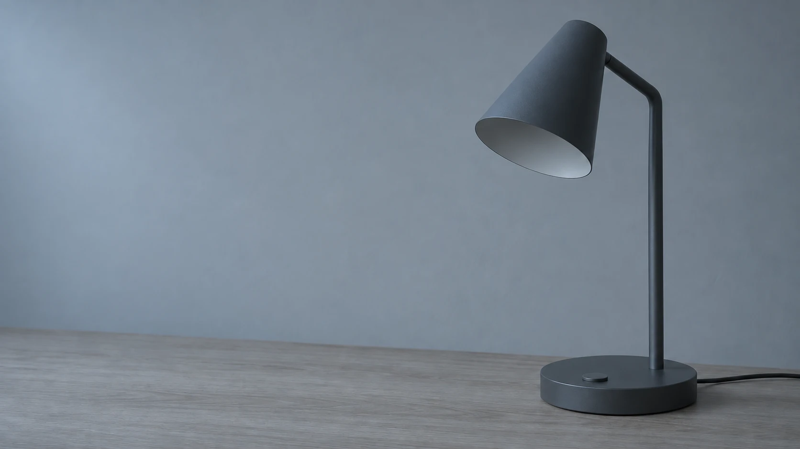


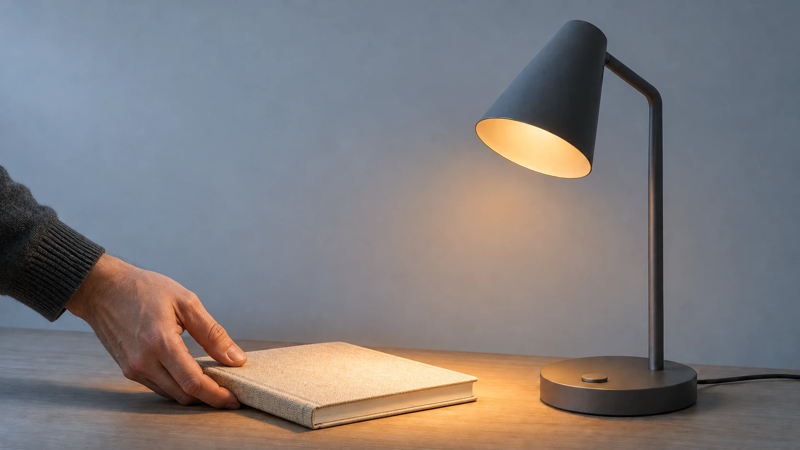

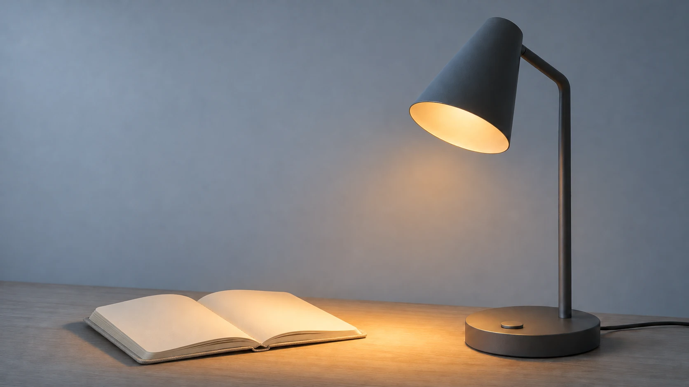
Эти изображения сгенерированы для объяснения замысла. Экспликация задаёт действия между ними. Положение предметов, направление руки и состояние блокнота необходимо согласовать при создании реальных видеопланов. Само наличие пяти красивых картинок ещё не означает, что переходы уже решены.
При обсуждении сценария проверяйте, сохраняет ли метафора задачу. Например, превращение корпуса в цветок могло бы выглядеть эффектно, но в нашем брифе важно оставить узнаваемой лампу. Поэтому изменение показываем через свет и появление человека у стола. Сравнение идей происходит до генерации всей последовательности.
Чатбот может подготовить черновик таблицы, но длительность проверяется монтажом. Прочитайте фразу вслух, соберите статичные кадры на таймлайне и добавьте временный звук. Такой аниматик выявляет проблемы раньше, чем начнётся дорогая генерация видео. Подробнее сценарий и экспликацию мы разбирали в лекции об основах драматургии.
Где попробовать генерацию бесплатно
Для первых тестов можно обойтись бесплатными лимитами. Сервисы называют их кредитами, токенами или попытками. Здесь это единицы расходования генераций внутри конкретной платформы. Длинное видео, большая картинка и отдельные модели могут тратить разное количество единиц. Условия ниже проверены 9 ноября 2026 года, доступный остаток смотрите в своём аккаунте.
| Сервис | Что попробовать для курса | Бесплатный старт |
|---|---|---|
| GigaChat и Kandinsky | Обсудить сценарий, подготовить изображения и попробовать анимацию. Kandinsky отвечает за визуальную генерацию в экосистеме Сбера | В официальной справке заявлена бесплатная работа. Возможности и ограничения уточняются после входа. Примеры запросов и результатов |
| Leonardo.Ai | Найти внешний вид предмета, окружение и варианты персонажа. Затем сравнить несколько опорных кадров | Ежедневный бесплатный лимит токенов. Доступность моделей и стоимость операции зависят от выбранного режима. Условия бесплатного уровня |
| Ideogram | Пробовать графические композиции и варианты изображения с надписями. Точный текст всё равно проверить и собрать в финальном макете | Подходящие под условия бесплатные аккаунты получают еженедельные кредиты при входе через Google, Apple или Microsoft. Размер выдачи может различаться. Тарифы и условия |
| Adobe Firefly | Сопоставить исходную картинку и движение, попробовать первый кадр и короткий атмосферный план | Ограниченное число бесплатных генераций в день на доступном наборе моделей. Справка о генеративных кредитах |
| Pika | Сделать несколько коротких тестов движения и сравнить расход лимита с длиной полезного фрагмента | В FAQ указан бесплатный Basic с 150 кредитами в месяц. Доступные режимы и расход смотрите перед запуском. Условия Pika |
| Runway | Попробовать image-to-video, если пробный баланс доступен в аккаунте | Free описан как разовая выдача 125 кредитов без обновления. Отдельная справка предупреждает, что бесплатные кредиты выдаются не всем аккаунтам. Free · Проверка выдачи |
Для первых тестов достаточно одного короткого фрагмента. Например, можно подготовить кадр лампы в Kandinsky или Leonardo, а затем анимировать его в доступном видеосервисе. Сначала выясните, сколько стоит одна попытка и можно ли скачать результат. Если бесплатный режим публикует изображения в общей галерее, для теста подойдут собственные эскизы и фотографии.
Сначала изображение, затем движение
Подход image-first особенно удобен там, где важны точная композиция и общий стиль серии. Сначала создают и утверждают изображения, которые показывают ключевые состояния. Затем из них получают короткие видеопланы. Это позволяет отдельно оценить художественное решение и поведение сцены во времени.
Опорный кадр, или styleframe, показывает вид будущего изображения: композицию, материал, свет, палитру и фактуру. Кадр раскадровки отвечает прежде всего за действие и последовательность. Эти документы могут выглядеть по-разному. Грубый рисунок хорошо объясняет сцену, а тщательно собранный styleframe помогает согласовать её внешний вид.
Вот конкретная пара из официального примера ComfyUI с Wan2.2: слева изображение, которое подают на вход, справа видеорезультат. Статичный кадр помогает заранее выбрать силуэт, свет и материалы. После анимации отдельно проверяем, как эти решения ведут себя при движении.

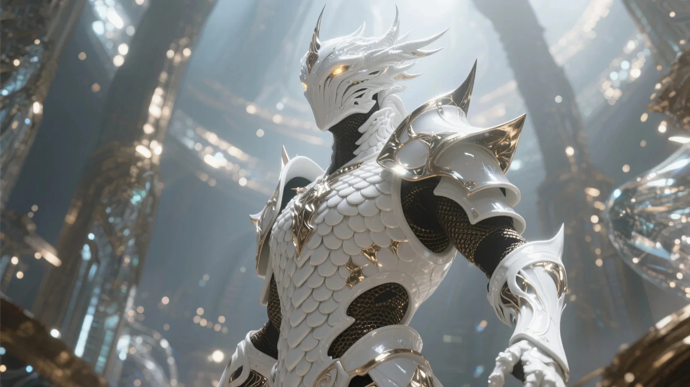
Опорный кадр нужен для согласования внешнего вида. Раскадровка нужна для последовательности событий. В примере с лампой один и тот же финальный кадр может выглядеть убедительно, даже если мы ещё не решили, откуда появилась книга. Поэтому сначала проверяем действие в последовательности, а затем используем выбранный вид как визуальный ориентир.
Начните с одного кадра, который лучше всего выражает идею. После выбора направления подготовьте соседние планы, сохраняя характер света, материалы и пропорции предметов. Используйте собственные фотографии и эскизы как визуальные опоры там, где инструмент поддерживает такой ввод. В изображениях заранее оставляйте место для титров и учитывайте обрезку под формат.
При работе с генератором изображений проверяйте контуры продукта, контакт с поверхностью, отражения, мелкие предметы и перспективу. Дефект, который кажется малозаметным в статике, может привлечь внимание при движении. Полезно сначала устранить ошибку локальным редактированием или в Photoshop, затем анимировать исправленный кадр.
В инструментах, которые поддерживают редактирование загруженного изображения, удобно менять фон, отдельный предмет или свет по очереди. После каждой правки сравнивайте результат с утверждённым вариантом: изменения могут затронуть соседнюю область. Сохраняйте исходник и промежуточные версии. Пример возможностей редактирования изображений в ChatGPT.
Text-to-image → image-to-video. Подходит для поиска образа и его последующей анимации. Основная работа начинается с отбора изображения и согласования соседних кадров.
Фотография продукта → генеративное окружение → композитинг. Позволяет сохранить утверждённый предмет и искать вариативные фоны. Важно согласовать перспективу, свет, отражения и контактную тень между слоями.
3D-блокинг → изображение → видео. Простая сцена задаёт ракурс, положение объектов и масштаб. Её можно использовать как визуальную основу, когда словесного описания недостаточно. Генеративная обработка может изменить детали геометрии, поэтому точные элементы проверяют отдельно.
Video-to-video. Исходная съёмка или анимация задаёт движение. Этот подход полезен, когда важны темп, пластика и последовательность действия. При стилизации следите, чтобы новый внешний вид не разрушал силуэт и связи между частями объекта.
Text-to-video. Удобен для эскизов движения, атмосферных вставок и сцен с высокой свободой интерпретации. Для точного продуктового плана сравните его с подходом, в котором уже есть утверждённое изображение.
Если инструмент принимает начальный и конечный кадры, они задают два состояния сцены. Между ними всё равно нужно описать действие. Убедитесь, что формы и ракурсы допускают переход. Два изображения с сильно различающимися предметами могут привести к непредусмотренному превращению вместо обычного движения.
В Firefly доступна генерация с изображениями в качестве первого или последнего кадра. Набор совместимых управляющих настроек зависит от выбранной модели. Перед серией проверьте конкретный режим интерфейса. Работа с опорными кадрами в Adobe Firefly.
В нашем примере это два состояния одного неподвижного плана, а не раскадровка всего ролика. Между ними меняется только свет: стол остаётся пустым, лампа сохраняет положение. Появление блокнота относится к следующему плану и требует отдельного действия руки.

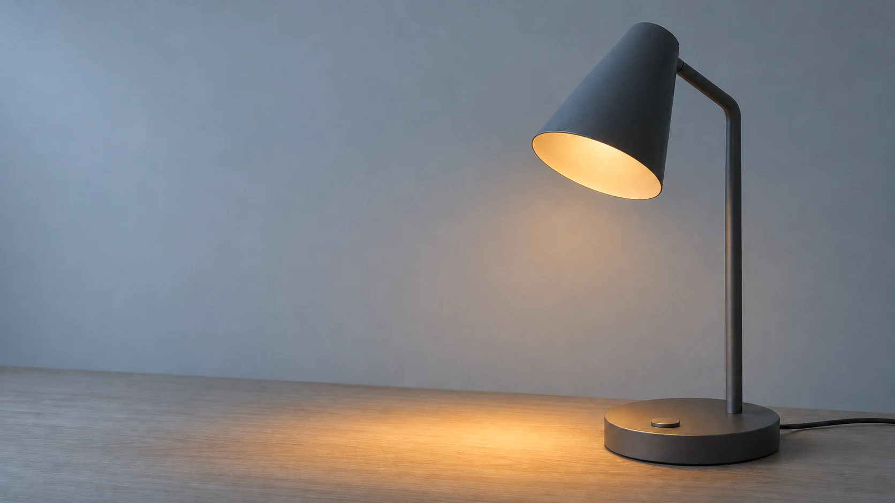
Неподвижная камера. Лампа сохраняет форму и положение. После короткой паузы лампа включается, тёплый свет появляется под плафоном и освещает участок пустого стола. Финальное состояние удерживается.
Это задание направления для модели, а не гарантия события на точном кадре. Для узнаваемого продукта проверяем результат рядом с исходником. Если нужен точный щелчок и мгновенное включение, световой слой и контакт руки удобнее контролировать отдельно, а генератору оставить атмосферу.

Композиция и анимация становятся языком промпта
Знания из лекции о композиции и монтаже нужны ещё до запуска генератора. «Красивый кадр лампы» не объясняет, что зритель должен увидеть. «Общий план пустого стола, лампа в правой трети, слева свободное пространство» уже задаёт и крупность, и баланс. «Деталь выключателя, виден контакт пальца» меняет смысл: теперь главное событие, а не интерьер.
Крупность, ракурс и композиция описывают разные решения. Крупность определяет, сколько предмета и окружения попадает в кадр. Ракурс задаёт, откуда на него смотрят. Композиция распределяет формы и акценты внутри рамки. Можно получить крупный план с верхнего ракурса или общий с нижнего. Одного слова «крупно» недостаточно, чтобы объяснить все три вещи.


Здесь важно проверять не только выполнение слова «сверху». Если при смене ракурса модель изменила форму основания или крепление плафона, это не новое композиционное решение, а расхождение с продуктом. Несколько фотографий, 3D-блокинг или дополнительные управляющие изображения дают больше сведений о скрытых поверхностях.
| Что знаем из композиции | Как переводим в запрос | Что проверяем в результате |
|---|---|---|
| Доминанта и иерархия | Называем главный предмет и отделяем его светом, размером или положением. | Не перетягивают ли внимание фон и случайный декор? |
| Крупность | Указываем общий план, средний или деталь и описываем границы кадра. | Действительно ли видна нужная часть предмета или жеста? |
| Ракурс | Определяем высоту камеры, направление взгляда, вид сбоку или сверху. | Сохранились ли перспектива и конструкция? |
| Свободное пространство | Оставляем область слева или сверху для отдельного титра. | Не заполнила ли модель эту область лишними предметами? |
| Глубина и направляющие | Описываем передний план, перекрытия, направление края стола или дорожки. | Поддерживают ли линии нужное направление взгляда? |
| Свет и контраст | Указываем направление, мягкость и локальность света. | Совпадают ли блики, тени и световое пятно? |
На соседних примерах из руководства Runway видно, насколько разную информацию несут макро и общий план. К каждому материалу в источнике приложено описание условий генерации.
Движение камеры тоже надо различать. Панорама поворачивает камеру из одной позиции, боковой проезд меняет её положение, наезд приближает камеру к сцене, а зум меняет поле зрения. При проезде ближние и дальние планы могут смещаться относительно друг друга. Поэтому запрос «сделай приближение» оставляет больше неопределённости, чем описание выбранного движения.
Глубина резкости управляет вниманием. Резкий передний предмет и мягкий фон сообщают одно, перевод фокуса с руки на лицо другое. Направляющая линия может вести к движущемуся объекту, а может уводить взгляд за край. Такие решения надо описывать в связи с задачей кадра, а не добавлять все знакомые термины сразу.
Знание анимации помогает описывать время. Вместо «красиво нажимает кнопку» можно задать наблюдаемую последовательность: рука приближается, ненадолго останавливается, палец нажимает, затем рука уходит. Подготовка объясняет намерение, контакт отмечает событие, пауза после него даёт прочитать результат. Точные длительности всё равно проверяются на таймлайне.
Камера неподвижна. Рука входит слева и подносит блокнот к столу. Перед касанием движение замедляется. Блокнот опирается на поверхность, пальцы отпускают его, затем рука выходит из кадра. После действия остаётся спокойная пауза.
В image-to-video значительная часть композиции уже находится в изображении. Текст помогает направить действие, камеру и развитие сцены во времени. Если в исходнике нет места для входящей руки, одним описанием жеста проблему не всегда решить: иногда нужно расширить кадр или изменить постановку. Если в кадре уже задана резкая динамическая поза, запрос на полную неподвижность тоже может потребовать другого исходника. Разбор роли изображения и описания движения.
ComfyUI и генерация на своём компьютере
ComfyUI позволяет собирать процессы из узлов: загружать материалы и модели, задавать условия, выполнять генерацию, редактировать результат и сохранять файлы. Это не только генератор одиночных картинок. В зависимости от модели и набора узлов можно работать с изображениями, видео, масками, картами глубины, позами и дополнительной обработкой. Один workflow не обязан поддерживать все эти задачи.
| Что хотим сделать | Что подаём | Что получаем и контролируем |
|---|---|---|
| Сгенерировать изображение | Текст, модель, размер, иногда референсы. | Варианты внешнего вида, композиции и материала. |
| Изменить часть картинки | Изображение, маску и описание правки. | Локальную замену, дорисовку, исправление детали. |
| Сохранить структуру | Контуры, карту глубины, позу или другие поддерживаемые условия. | Новый внешний вид с опорой на заданное расположение форм. |
| Получить видео | Текст, изображение либо начальный и конечный кадры. | Видеоплан. Возможности зависят от конкретной видеомодели. |
| Переработать существующее видео | Клип, управляющую последовательность, референс и при необходимости маску. | Стилизацию, замену окружения или области, продолжение либо расширение кадра. |
| Подготовить материал к монтажу | Изображения или кадры видео. | Масштабирование, выделение, цветовые операции и другие стадии выбранного процесса. |
Изображения и изменение существующего кадра. В text-to-image текст направляет создание изображения. В img2img исходное изображение становится дополнительной основой. Ниже официальный пример: грубый рисунок помогает задать расположение фигуры и крыльев, а модель предлагает подробное изображение. Это полезно для перехода от эскиза композиции к варианту оформления.

Маска и локальная правка. Inpainting позволяет обозначить область изменения, например удалить лишний предмет, исправить руку или заменить часть одежды. Маска сообщает, где допустимо вмешательство. В обычном workflow Load Image выход MASK получается из прозрачности изображения; знак и диапазон надо понимать по конкретному узлу. После генерации сравниваем границу правки, свет и сохранность соседних областей.

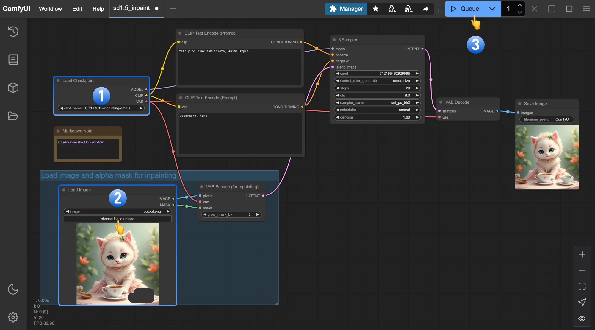
Для лампы маской можно ограничить фон или убрать лишний предмет, сохраняя основную композицию. Для абсолютно точного корпуса полезно дополнительно вернуть исходный продукт поверх обработанного фона. Маленькая маска не даёт безусловной гарантии, что материал и границы останутся верными. Это проверяется изображением, а не названием режима.
Глубина, контуры и поза. Карта глубины хранит оценку расстояний в кадре и помогает отличить передний план от дальнего. Светлое и тёмное в такой карте кодируют данные, а не освещение предмета. Соглашение о ближнем и дальнем зависит от инструмента. Контурная карта передаёт границы форм, поза задаёт расположение суставов. Эти условия направляют поддерживающую их модель, но не становятся автоматически точной 3D-сценой.
В официальном примере VACE исходное движение преобразовано в управляющий материал с глубиной и скелетом позы, а внешний вид задаётся отдельным изображением. Так можно сохранить основу жеста и заменить персонажа или окружение. Условие движения и референс внешности выполняют разные функции.

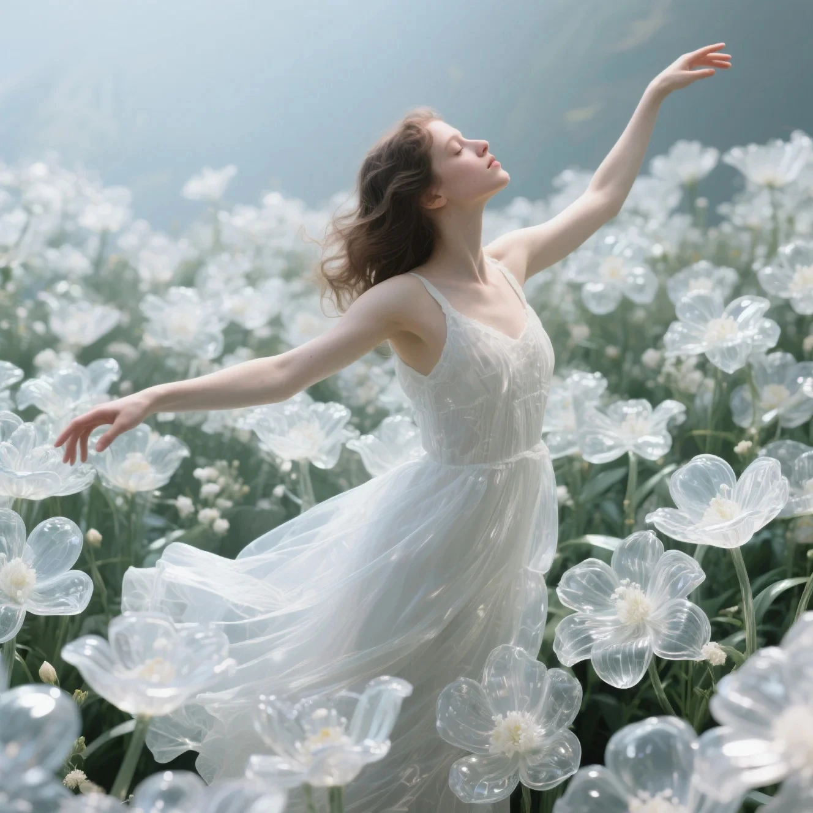
Это уже понятная связь с обычной анимацией. Движение можно поставить руками, получить из съёмки или другого источника, затем использовать как основу генеративной обработки. Если в исходнике нет убедительной опоры или ясного жеста, перенос внешнего вида сам по себе этого не исправляет. Проверяйте контакты, траекторию и последовательность действий до стилизации.

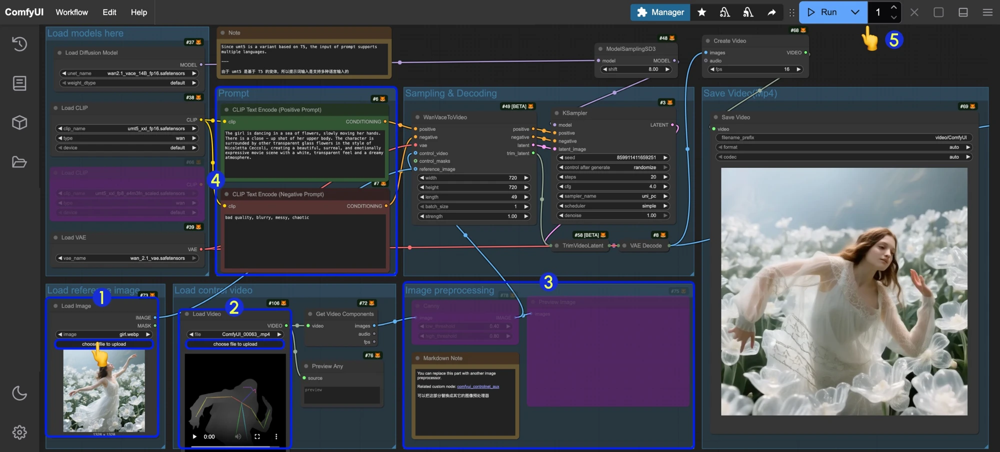
Создание видео и работа с опорными кадрами. Например, Wan2.2 имеет отдельные workflow text-to-video, image-to-video и first-last-frame-to-video. Это разные входы и разные модели или настройки. Пара «изображение и видеорезультат» выше относится к image-to-video. Ниже показана его схема в ComfyUI. Два опорных кадра ограничивают начало и конец, но не описывают весь способ перехода между ними.

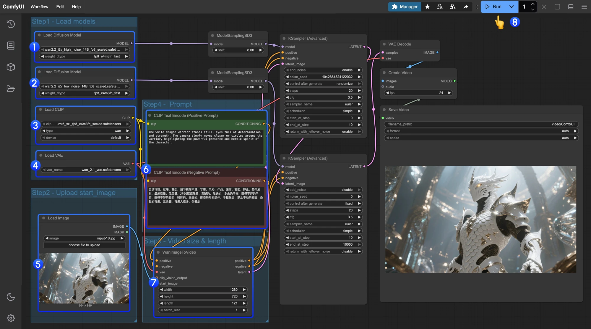
Редактирование видео по маске. Видеомаска должна соответствовать изменяемой области во времени. У неподвижного объекта иногда достаточно простого ограничения, у движущегося нужна последовательность масок или подходящий механизм модели. Ошибка области редактирования может затронуть героя, фон или контактную тень. В примере ниже белая зона извлечена из прозрачности официального исходника и показывает область рядом с маленьким спутником героя.

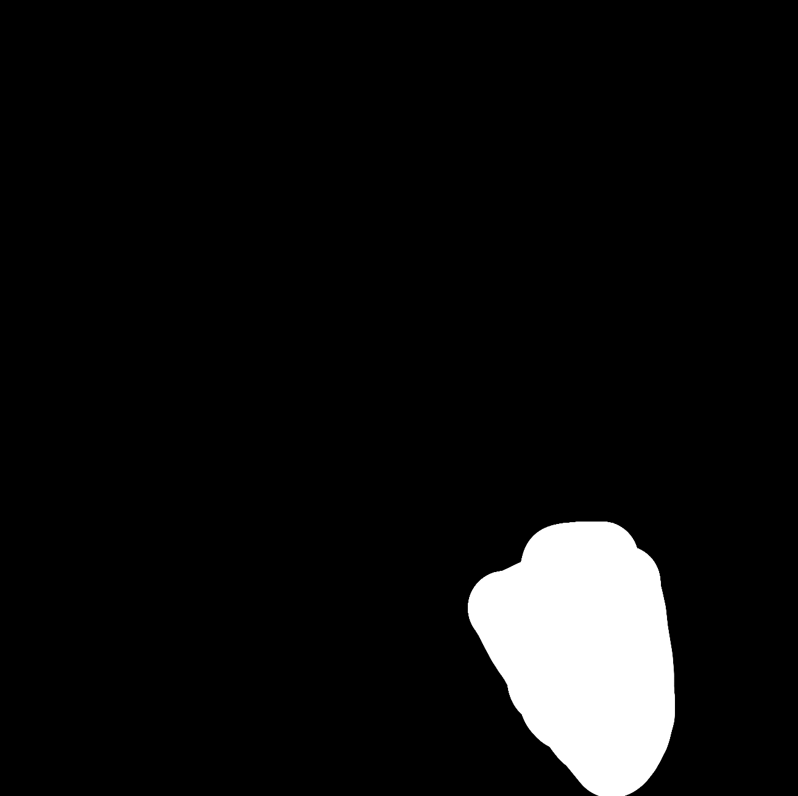
У VACE есть и процессы для локальной замены, смены фона и расширения видео. Outpainting расширяет видимую область за прежней границей кадра. Для нового формата это иногда удобнее жёсткого кадрирования, но дорисованные части надо проверить на перспективу и непрерывность движения. Возможности относятся к выбранной модели и workflow, а не к любому процессу, открытому в ComfyUI. Галерея разработчиков VACE с примерами редактирования.
Обработка и сборка. В узловой цепочке можно изменять размер, кадрировать, подготавливать маски, выделять фон, применять подходящие модели апскейла или интерполяции и сохранять последовательность кадров. Часть операций есть в базовых узлах, часть требует дополнительных расширений. Предобработка глубины, позы и сегментации тоже требует соответствующих моделей или узлов. Важно различать подготовку данных, генерацию и финальное сведение.
- Съёмка или анимация
Нужное действие - Предобработка
Маска, глубина или поза - Условия
Референс и текст - Видеомодель
Новый визуальный вариант - Проверка
Контакты и стабильность - Монтаж и AE
Ритм, точная графика и звук
Шаблоны и запуск на своём компьютере. Templates открывается в боковой панели или через Workflow → Browse Workflow Templates. Выбирайте шаблон по задаче, затем проверяйте модели, входные файлы и место вычисления. API-пометка означает работу через внешний сервис. Открытый локально интерфейс не делает такую ветку локальной или бесплатной.

Workflow связывает загрузчики, условия, вычисление и сохранение. В базовом процессе Stable Diffusion у KSampler сходятся модель, текстовые условия и латент. После VAE Decode получается обычное изображение. Видеопроцессы имеют другую структуру, поэтому не стоит переносить названия и параметры одной модели на все остальные.
Для локального запуска нужны файлы моделей, место на диске и подходящее оборудование. Память зависит от модели, размера, длительности и оптимизаций. Недостающие файлы ComfyUI показывает как Missing Models. Начните с нужного для выбранной задачи набора. Установка Comfy Desktop.

Сохраняйте workflow вместе с исходниками и версиями моделей. Дополнительный узел, контрольная карта и маска должны быть доступны при повторном открытии. Полезно сначала собрать короткую понятную цепочку, затем добавлять управление. Иначе сложно отличить ошибку данных от ошибки настройки и неудачного результата самой модели.
Генерируем планы, из которых можно собрать монтаж
Единицей производства удобно сделать отдельный план с ясным началом и завершением. Генерация длинного непрерывного фрагмента затрудняет локальные правки. Короткие планы дают возможность выбирать удачные части, менять порядок и управлять темпом. Их длительность определяется действием и задачей ролика.
На монтаже нужны дополнительные кадры вокруг полезного события. Если нужный жест возникает в последний момент, склейку будет трудно поставить после него. При выборе дубля оценивайте не только красивую середину, но и возможность входа и выхода. Начальная статичная пауза тоже может быть полезна, если даёт зрителю время рассмотреть продукт.
Для сцены включения лампы полезно иметь момент до появления света, само изменение и небольшую паузу после. Если генератор постоянно начинает действие сразу, попробуйте разделить планы или получить отдельный спокойный фон, который позволит расширить начало в композитинге.
Схема монтажного запаса. Не обрезайте генерацию сразу по событию: спокойные участки по краям позволяют выбрать момент склейки. Их длина зависит от темпа ролика.
В раскадровке с лампой деталь нажатия объясняет включение, отдельный план руки объясняет появление блокнота, а спокойная страница закрепляет новое состояние. На монтаже эти события не надо превращать в один длинный непрерывный морфинг.
Подготовьте визуальный паспорт. Зафиксируйте пропорции продукта, ключевые цвета, материал корпуса, характер света, фон и допустимую фактуру. Для персонажа добавьте силуэт, одежду и отличительные детали. Для каждой новой сцены сравнивайте результат с этим паспортом, а не только с предыдущей генерацией.
Визуальный паспорт удобнее показать рядом с утверждённым кадром. Он фиксирует не только «серый цвет», но и конструкцию, состояние реквизита, камеру и свет. Это краткая договорённость для всей серии, а не новый промпт для каждого плана.
Продукт · конический плафон, тонкая стойка, круглое основание, одна кнопка.
Материалы · матовый графитовый корпус, светлое дерево, тканевая обложка.
Свет · холодная окружающая среда, тёплое локальное пятно после включения.
Реквизит · блокнот появляется через действие руки, затем остаётся открытым.
Композиция · лампа справа, рабочая область слева; финальный титр вне предметов.
Проверка на соседних вариантах становится конкретнее. Ниже слева кадр после включения и начала работы, справа прежний вариант с закрытым блокнотом и холодным дневным светом. Справа может быть приятная самостоятельная картинка, но для выбранного момента она меняет состояние сцены.

Разные виды референсов нельзя подменять друг другом. Контрольный вид продукта отвечает за конструкцию. Первый кадр отвечает за начало конкретного плана. Видеореференс задаёт характер движения. Маска ограничивает область изменения. Карта глубины помогает удержать пространственное расположение. Один красивый референс не содержит автоматически всех этих данных.
- Паспорт и виды
Что за предмет - Первый кадр
Как начинается план - Видео или блокинг
Как происходит действие - Маска и карты
Где и что контролируем - Монтажная проба
Как планы соединяются
На примере с лампой контрольный вид фиксирует форму плафона, стойки и основания. Первый кадр задаёт состояние конкретного плана: лампа выключена, стол ещё пуст.
В примере VACE исходный клип задаёт движение, фотография задаёт внешность персонажа, а карта глубины и линии позы помогают перенести движение. Запустите исходник и результат и сравните, как меняется положение рук.
Маску можно посмотреть в примере локального редактирования. Для монтажной пробы вернитесь к раскадровке лампы и проверьте связь трёх соседних планов: нажатие, включение света, появление блокнота.
Референс внешнего вида, первый кадр и референс движения выполняют разные задачи. Изображение может задавать персонажа или композицию, а видео показывать пластику движения. Какие именно данные учитывает инструмент, зависит от модели и режима. Проверяйте выбранный рабочий процесс на одном тестовом плане до производства всей серии.
Одинаковый seed может помочь воспроизвести конкретный вариант в некоторых инструментах, но не гарантирует одинаковую геометрию героя во всех сценах. Условия воспроизведения зависят от версии модели и параметров. Поэтому сохраняйте также реальные исходные файлы, название режима и настройки каждого принятого дубля.
Сравните несколько сервисов на одной задаче. Дайте одинаковый исходный кадр и близкое описание движения. Смотрите, как сохраняется форма продукта, насколько управляемо движение, сколько полезных секунд получилось и легко ли исправить результат. Оцените экспорт, разрешение, формат, наличие звука, доступные опоры и стоимость удачного плана.
Для знакомства можно рассмотреть Runway и Adobe Firefly, а затем сравнить с другими доступными видеогенераторами. При выборе важнее совпадение с задачей, чем место инструмента в рекламном рейтинге. Состав моделей, лимиты и стоимость регулярно меняются, поэтому перед работой проверяйте текущие условия выбранного сервиса.
В облачных инструментах часть подготовки и вычислений организована сервисом. Локальный или узловой процесс, например в ComfyUI, позволяет подробнее видеть последовательность обработки и сохранять её как рабочую схему. При этом придётся согласовать модели, память видеокарты, зависимости и лицензии. Для первых тестов удобнее собрать короткую понятную цепочку, а затем постепенно добавлять новые стадии.
Удачный кадр должен работать внутри ролика. Составьте контактный лист опорных изображений и черновую монтажную последовательность. Сразу становятся заметны различия в цвете корпуса, размере лампы, высоте камеры и плотности деталей. На отдельных красивых стоп-кадрах эти расхождения легко пропустить.
Просмотрите клип в обычном темпе, затем покадрово в местах действия и склеек. Проверьте силуэт, количество деталей, отражения и поведение материала. Проследите, как объект входит в перекрытие и выходит из него. Рука за лампой, тонкая ножка, шнур и прозрачная поверхность часто требуют особого внимания. Проверяйте также начало и конец, где иногда появляются внезапные деформации.
Отделяйте нестабильность геометрии от изменения света. Блик может перемещаться по поверхности при движении камеры, а корпус должен сохранять конструкцию. Если ножка меняет толщину или выключатель оказывается в другом месте, проблема относится к предмету. Усиление резкости такой дефект не исправит.
Если смысл и действие верны, а ошибка занимает небольшую область, можно рассмотреть локальную замену, маску или ретушь. Если не работает основной жест, меняется конструкция предмета или нарушается связь между планами, проще вернуться к опорному изображению либо сменить способ производства. Иногда достаточно сократить движение камеры.
Сохраняйте варианты с понятными именами, например lamp_sh03_moveB_v04. В журнале отметьте исходный кадр, инструмент, промпт, настройки и причину принятия или отказа. Стоимость полезно считать по готовым принятым секундам вместе со временем отбора и исправлений. Большое число генераций само по себе не означает, что проект движется к завершению.
Апскейл и улучшение материала

Апскейл увеличивает разрешение изображения. Генеративное улучшение может также синтезировать детали, менять локальную резкость, уменьшать шум и влиять на восприятие фактуры. Поэтому результат оценивают как новую версию материала. Увеличенный размер файла ещё не подтверждает, что в нём сохранился нужный дизайн.
Topaz Video, который также встречается в материалах под названием Video AI, предлагает инструменты увеличения разрешения, шумоподавления, стабилизации и интерполяции. Это разные операции с разными целями. Выбирайте конкретную задачу для каждого прохода. Официальный обзор Topaz Video.
Опорное изображение стоит подготовить перед анимацией, если его качества не хватает для выбранного режима ввода. Видеопланы разумно улучшать после предварительного отбора. Так ресурсы уходят на материал, который действительно войдёт в ролик. Оставляйте монтажный запас вокруг выбранного участка, чтобы после обработки сохранить свободу склейки.
Если нужен единый визуальный характер серии, сравните обработку нескольких разных планов. Настройка, удачная для металлического корпуса, может придать коже или бумаге искусственную фактуру. Выбирайте параметры по материалу и движению, а не переносите один сильный пресет на всю последовательность.
Возьмите короткий тест, где есть движение и мелкие детали. Сравните исходник, обычное масштабирование в монтажной программе и вариант улучшения при одинаковом размере просмотра. Затем включите последовательность. Обратите внимание на мерцание тонких линий, «дышащую» фактуру, изменение букв и чрезмерно гладкие поверхности. Смотрите также весь кадр: выигрыш в микродеталях не должен разрушать общий характер изображения.
На сравнении Topaz видна разница между исходной VHS-C записью и вариантом Proteus. Смотрите на края, текстуру шерсти и фон. Это пример производителя на конкретном материале, а не обещание такого же выигрыша на любом сгенерированном клипе.

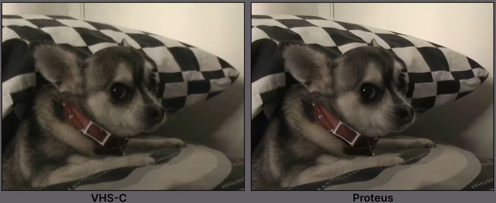
Для продуктовой графики полезен и другой тип материала: мелкие брызги, тонкие границы и прозрачность. На примере с бутылкой увеличение подчёркивает детали, которые затем нужно проверить в движении. Высокая детализация не гарантирует, что буквы, грани продукта и отдельные капли сохранились правильно.

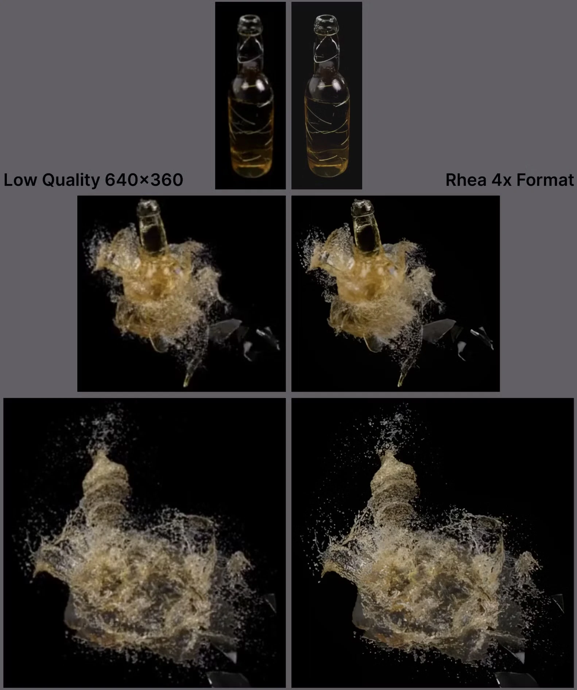
Резкость и восстановление тоже нужно выбирать. Ниже два варианта обработки одного фрагмента: Proteus и Proteus Natural. Сравните мелкие лица и фон. Более резкая картинка может выглядеть активнее, но не всегда точнее. Для нашего чистого корпуса лишняя «придуманная» фактура может стать дефектом.

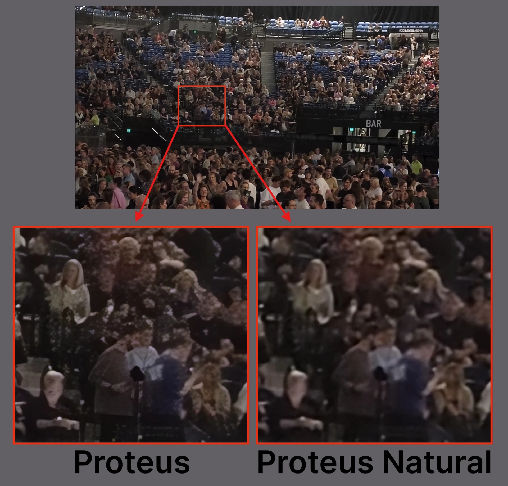
Для лампы особенно важны грани корпуса, шнур, блики и логотип. Если обработка начинает менять форму буквы или дорисовывает ложные швы, снизьте вмешательство либо восстановите точный элемент отдельным слоем. Избыточная детализация может сделать чистую стилизованную картинку визуально грязнее.
Интерполяция создаёт промежуточные кадры, оценивая движение между существующими. Она может пригодиться для замедления или согласования частоты, но требует проверки перекрытий, быстрых жестов и тонких деталей. Резкую склейку обрабатывают отдельно от движения внутри плана, иначе между разными сценами могут возникнуть выдуманные промежуточные изображения. Как Topaz описывает интерполяцию кадров.
В примере из документации Topaz между соседними кадрами птица и фон меняются очень сильно. Внизу показаны различия между кадрами. Такая последовательность объясняет, почему новая промежуточная картинка требует оценки движения и может получиться неверной: модель должна разобраться в перекрытиях, тонких ветках и быстро меняющейся форме.

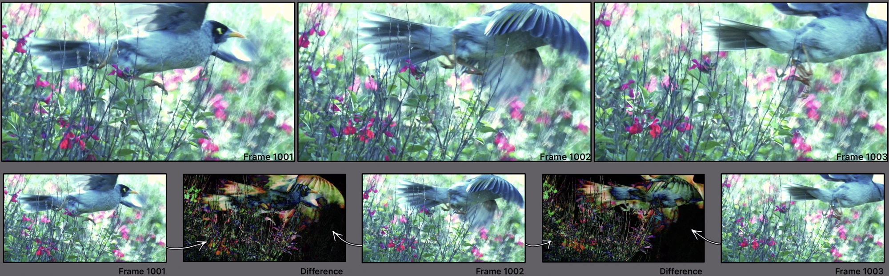
Для анимации персонажа нельзя путать увеличение числа кадров с улучшением самой постановки. Если исходные позы не передают вес или путь руки сломан, интерполяция не принимает за нас актёрское решение. Сначала выбираем и исправляем движение, затем решаем, нужны ли новые промежуточные кадры для формата или замедления.
Сначала определите частоту финального проекта. Если все планы должны жить в 25 кадрах в секунду, проверьте их на таком таймлайне до массовой обработки. Увеличение частоты меняет ощущение движения и не исправляет сломанную позу или неверную траекторию. Для короткой графической работы иногда лучше сохранить исходный ритм, а длительность решить монтажом.
Изображение можно увеличить до видео, а готовый ролик обработать после монтажа выбранных планов. Встроенное масштабирование в AE или монтажной программе подходит как контрольный вариант. Отдельный инструмент восстановления имеет смысл, когда виден выигрыш на конкретном материале. В некоторых случаях достаточно умеренного шумоподавления, аккуратного зерна и согласованного контраста.
Финальную типографику и точную фирменную графику удобнее накладывать после обработки фона. Так апскейл не переинтерпретирует контуры букв. Сохраняйте промежуточный мастер в подходящем качественном формате, чтобы избежать повторного сильного сжатия между стадиями. Возможности кодеков и форматов проверяйте в выбранной программе.
Постпродакшн возвращает контроль над роликом
Сгенерированные планы становятся исходным материалом для монтажа. Здесь решаются начало и конец события, последовательность, ритм, связь изображения со звуком и время чтения. Хороший отдельный клип может оказаться лишним, если повторяет функцию соседнего или разрушает темп.
Сначала соберите действие без декоративных переходов. Проверьте, понятно ли изменение состояния. У лампы зритель должен различить исходное пространство, момент включения и результат. Если эти три фазы читаются, можно уточнять длительность. Если смысл теряется, дополнительные эффекты обычно усложняют чтение.
Сравнивайте склейки по направлению движения, крупности, положению доминанты и свету. Сохраняйте понятную географию предмета. Генератор может дать два прекрасных кадра, в которых окно находится с разных сторон, а шнур меняет направление. На монтаже это превращается в нарушение пространства.
Для связи планов используйте знакомые приёмы: склейку по действию, совпадению формы, направлению взгляда или звуковому акценту. Морфинг между любыми двумя изображениями не всегда поддерживает задачу. Он особенно уместен там, где превращение само несёт смысл.
Разделите кадр на управляемые части. Фон может оставаться сгенерированным, а точная лампа, логотип и текст размещаются отдельными слоями. Маски помогают исправить локальную область, трекинг связывает графику с движением, а цветокоррекция согласует материалы. При заметной перспективе плоского переноса слоя может оказаться недостаточно.
Сопоставляйте не только цвет, но и чёрную точку, резкость, глубину резкости, зерно и размытие движения. Слишком чистый логотип на мягком фоне выглядит чужим. При этом обязательный текст должен оставаться читаемым. Финальную графику проверяют на целевом размере экрана, включая мобильный просмотр.
Контактная тень и отражение часто делают больше для убедительности продукта, чем дополнительный декоративный эффект. Если лампа стоит на столе, у её основания должна сохраняться понятная связь с поверхностью. При подмене продукта следите, чтобы изменения света и отражений совпадали с окружением.
Некоторые инструменты позволяют дорисовать начало или конец видеоплана либо изменить часть сцены. Это может помочь сохранить монтажную паузу или подготовить переход. После продления сравните последний исходный кадр с первым добавленным и просмотрите стык в темпе. Проверьте, не изменились ли движение, форма и фон.
Для двенадцатисекундного ролика достаточно небольшого числа точных звуков. Щелчок выключателя отмечает событие, изменение фоновой атмосферы поддерживает переход к теплу, музыкальная пауза даёт финальному кадру время. Звуковой акцент должен соответствовать весу и материалу предмета.
Синтезированный голос нужно проверять по ударениям, произношению названий, смысловым паузам и эмоциональной интонации. Прослушивайте весь текст в контексте монтажа. Для использования узнаваемого голоса или внешности заранее выясняют разрешения и условия проекта.
Надписи и логотипы собирайте из утверждённых исходников. Генеративная картинка может служить визуальной опорой, а финальная типографика должна сохранять нужный текст, гарнитуру, интервалы и длительность чтения. На мобильном экране также учитывают интерфейс платформы и безопасные зоны.
Просмотрите ролик целиком без остановок, затем отдельно проверьте критические места. Сверьте текст, конструкцию продукта, цветовые переходы, звук и длительность финальной карточки. Проверьте экспортированный файл, а не только таймлайн. После сжатия могут стать заметнее полосы на градиентах, шум и мелкое мерцание.
В папке проекта сохраняйте исходные фотографии, принятые генерации, журнал настроек, монтажный проект, звук и финальные версии. Это помогает вернуться к правке и объяснить производственную цепочку. Для коммерческой работы отдельно проверяйте действующие условия инструментов, права на загруженные материалы и допустимость загрузки клиентских исходников.
Сначала команда выбирает мысль «свет меняет ощущение места». Чатбот помогает предложить несколько сценарных направлений и сформулировать действия. Дизайнер выбирает последовательность из пяти планов и собирает аниматик из грубых изображений. Уже здесь выясняется, хватает ли времени на включение и финальную фразу.
Далее создаётся визуальный паспорт и общий кадр рабочего места. По нему уточняются палитра, высота камеры и положение лампы. Второй и третий планы проверяются рядом с первым. Точный выключатель снимается или анимируется отдельно. Продуктовая фотография сохраняется как контроль конструкции корпуса.
В image-to-video отправляется средний план с простым боковым движением. Для общего плана достаточно слабого изменения атмосферы. Вместо попытки получить все события одним запросом каждый клип решает одну задачу. При отборе команда проверяет края предметов, тени и возможность склейки.
На монтаже выбранные фрагменты сокращаются до нужного ритма. Затем короткие тесты апскейла сравниваются с исходниками. Принятые настройки применяются к выбранным планам с запасом. В AE добавляются точный продуктовый слой, логотип и титр, согласуются свет и фактура. Щелчок, музыка и финальная пауза завершают историю.
- Сценарий задаёт изменение
- Опорные кадры задают внешний вид
- Генерация предлагает движение
- Отбор определяет материал
- Монтаж задаёт время
- Композитинг уточняет детали
В официальном просмотре AI Film Festival доступны фильмы разных авторов. Total Pixel Space Якоба Адлера можно рассмотреть как пример фильма-эссе, где изображения объединяет мысль и повествование. В JAILBIRD Эндрю Солтера обратите внимание на выбранную точку зрения. У ONE Рикардо Вильявисенсио и Эдварда Саатчи сравните общий масштаб мира и более близкие планы. Смотреть фильмы на официальной странице фестиваля.
У Fragments Of Nowhere Vallée Duhamel рассмотрите связь между фрагментами пространства и восприятием. В Editorial Риккардо Фузетти можно обсудить выразительность короткого формата. Эти работы находятся в той же фестивальной подборке. В отдельном эпизоде хорошо видно, как движение внутри изображения сочетается с ритмом склеек. Фестивальная подборка.
В руководстве Runway представлены пары «изображение и результат» с текстами запросов. Сравните несколько движений камеры и посмотрите, какие элементы остаются стабильными. Это удобный материал для обсуждения конкретной формулировки промпта. Анимированные примеры Runway.
У Topaz есть серия официальных уроков по предварительному просмотру, сравнению вариантов, улучшению, интерполяции и экспорту. Для знакомства с обработкой подойдут разделы сравнения вкладок и улучшения видео низкого разрешения. Во время просмотра оценивайте материал в движении, а не только увеличенный стоп-кадр. Видеоуроки Topaz.